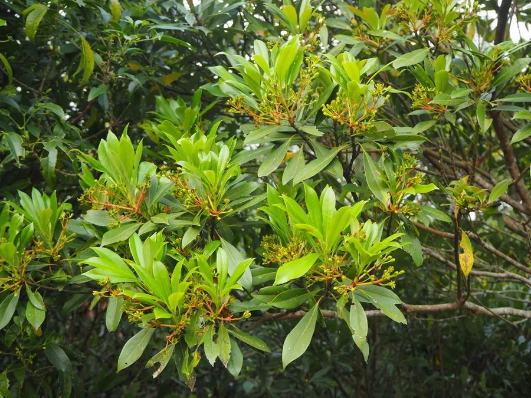

乔木 · 植物界
红楠 Machilus thunbergii

中国南方与日本的常绿乔木，春季新叶鲜红、树冠浓密，木材可供建筑，是常绿阔叶林中的常见树种。
- 分类
- 门被子植物门纲木兰纲目樟目科樟科属润楠属
- 栖息环境
- 海拔 1000 米以下的常绿阔叶林与沟谷，喜温暖湿润，耐阴
- 地理分布
- 中国长江流域以南及华南、西南地区，日本、朝鲜半岛也有分布
- 保护级别
- 暂无评估；中国未列入国家重点保护野生植物名录
物种志
红楠为常绿乔木，高可达 20 m，树皮灰褐色；叶片倒卵形至椭圆形，革质，表面深绿，春季新叶鲜红，后转绿。花期 4 月，圆锥花序腋生，花小、黄绿色；果实为浆果状核果，球形，成熟时紫黑色，果柄红色。
红楠分布于中国长江流域以南及华南、西南地区，也见于日本、朝鲜半岛，喜温暖湿润、耐阴，适宜深厚肥沃的酸性土壤，是常绿阔叶林的重要组成树种。春季新叶鲜红、果柄红艳，观赏价值高，可作园林树种；木材纹理直、耐腐，可供建筑、家具与细木工用；树皮可提取栲胶。红楠耐阴，幼树能在林冠下生长，是亚热带常绿阔叶林的典型树种之一。
形态与习性
- 株高可达 20 m，春季新叶鲜红
- 花期4 月，圆锥花序腋生
- 果期7–8 月，核果紫黑色
- 光照耐阴，幼树喜庇荫
- 土壤酸性壤土，排水良好
- 主要用途建筑与家具用材、园林观赏、树皮提取栲胶
趣味知识
- 红楠春季新叶鲜红，与深绿色的老叶相映，十分醒目。
- 红楠的果柄呈红色，果实成熟时紫黑色，是鸟类的食物。
- 红楠耐阴，幼树能在常绿阔叶林冠下正常生长。